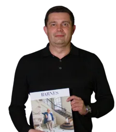

<div class="handoff-block" data-handoff-block="14-floating-expert" data-block-kind="floating-expert"><aside class="floating-expert floating-expert--alexander" data-v-553bd346="" aria-label="Михаил Долгов"><button data-v-553bd346="" type="button" class="floating-expert__card" aria-haspopup="dialog"><span data-v-553bd346="" class="floating-expert__avatar"></span><span data-v-553bd346="" class="floating-expert__content"><span data-v-553bd346="" class="floating-expert__label">Руководитель департамента загородной недвижимости</span><span data-v-553bd346="" class="floating-expert__title">Задать вопрос эксперту</span><span data-v-553bd346="" class="floating-expert__name">Михаил Долгов</span></span></button><button data-v-553bd346="" type="button" class="floating-expert__close" aria-label="Скрыть карточку Михаил Долгов"></button></aside></div>
